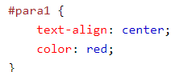

UM CONJUNTO DE REGRAS CSS CONSISTE EM UM SELETOR E UM BLOCO DE DECLARAÇÃO:

o seletor aponta para o elemnto html que você deseja estilizar.
o bloco de declaração contém uma ou mais declarações separadas por ponto e virgula.
cada declaração inclui um nome de propriedades css e um valor,separados por dois pontos.
uma declaração css sempre termina com um ponto e virgula e os blocos de declaração são cercados por chaves.
no exemplo a seguir,todos os elemntos
serão alinhados ao centro,com uma cor de texto vermelha:

o seletor de id usa o atributo id de um elemnto html para selecionar um elemento específico.
o id de um elemnto deve ser único dentro de uma página,então o seletor de id é usado para selecionar um elemnto único!
para selecionar com id específico,escreva um caractere hash (#),seguido pelo id do elemnto.
a regra de estli abaixo será aplicada do elemento html com id="para1":
O seletor de classe seleciona elementos com um atributo de classe específico.
Para selecionar elementos com uma classe específica, escreva um caractere de ponto (.), Seguido do nome da classe.
No exemplo abaixo, todos os elementos HTML com class = "center" serão vermelhos e alinhados ao centro:

Você também pode especificar que somente elementos HTML específicos devem ser afetados por uma classe.
No exemplo abaixo, apenas os elementos
com class = "center" serão centralizados:

Elementos HTML também podem se referir a mais de uma classe.
No exemplo abaixo, o elemento
será estilizado de acordo com class = "center" e class = "large":

Se você tiver elementos com as mesmas definições de estilo, assim:

Será melhor agrupar os seletores para minimizar o código.
Para agrupar seletores, separe cada seletor com uma vírgula.
No exemplo abaixo, agrupamos os seletores do código acima:

Os comentários são usados para explicar o código e podem ajudar quando você editar o código-fonte em uma data posterior
Comentários são ignorados pelos navegadores.
Um comentário CSS começa com / * e termina com * /. Comentários também podem abranger várias linhas: